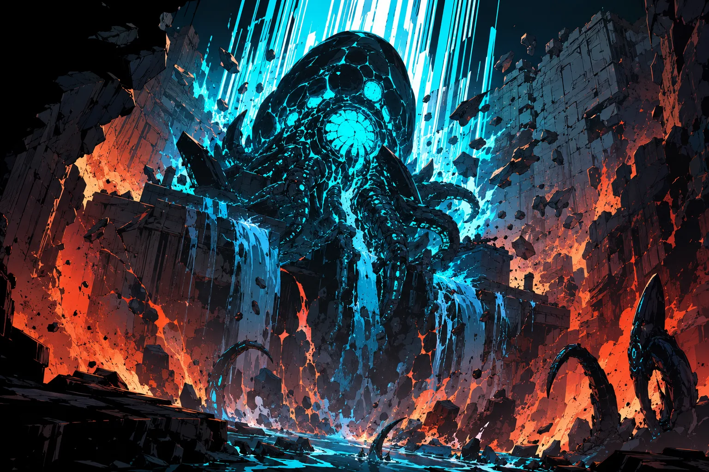

Stable Compendium record
drk-the-egg
Drakken operational dossier / Genesis Nodes
The Egg
Origin node containing embryonic macro-code; a compiled Drakken initialization state tuned by Mother. Rogue hatchings can reshape biospheres.
- Stable ID
drk-the-egg- Structural type
- character-section
- Canon status
- unknown
- Spoiler level
- major
Published source content
Operational role
Origin node containing embryonic macro-code; a compiled Drakken initialization state tuned by Mother. Rogue hatchings can reshape biospheres.
Archetype function
Origin systems: compiled initialization states and the fixed homeworld ecology that produces and synchronizes Drakken.
Archival visual references
Incident reference
